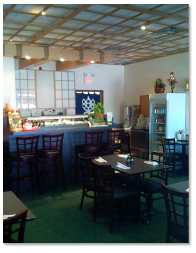

Categories
- Lunch Special Menu
- Vegetarian Menu
- Soup/Salads Menu
- Appetizer Menu
- Curry/Teriyaki/Tempura Menu
- Fried Noodles/Fried Rice menu
- Noodles Soup/Donburi Menu
- Famous Cut Rolls/Hand Rolls Menu
- Chef's Special Maki Menu
- Sushi Sashimi & Maki Combination Menu
- Party Trays/Sashimi Set Menu
- Bento Dinner Special Menu
- Dinner Set Course (Two/Four) Menu

Please scan QR code to order online and select an appetizer for FREE (Edamame /Gyoza /Aged tofu/ vegetarian spring roll)
Welcome to Sushi Huang Japanese Restaurant
Dine in, Take out, All-You-Can-Eat
|
At Sushi Huang's we not only keeps it's traditional Japanese dishes but is also introducing sushi eaters to a more modern style Sushi, by creating new rolls and appetizers with ingredients from all over the world. To assure freshness of the fish, all fish are carefully picked daily by our most experienced chef. To ensure an affordable price and food quality for our customers we personally handpick all of our ingredients daily from the market directly, instead of relying on the local distributor. Our goal is to create a clean atmosphere and friendly service for friends and families to enjoy delicious and healthy Japanese dishes at an affordable price. We encourage you to visit us and experience all that Sushi Huang to offer! Contact us at 905-727-1133 |

(Lunch Special discount NOT applicable) |
Monday 11:00 am - 9:00 pmTuesday ClosedWednesday 11:00 am - 9:00 pmThursday 11:00 am - 9:00 pmFriday 11:00 am - 9:00 pmSaturday 11:00 am - 9:00 pmSunday 12:00 pm - 9:00 pmLunch 11:00 am - 4:00 pm
Please scan QR code to order online and select an appetizer for FREE (Edamame /Gyoza /Aged tofu/ vegetarian spring roll) |